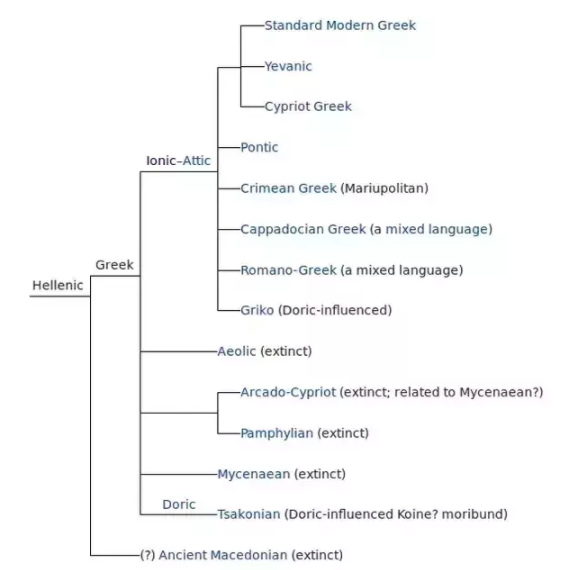

The Ionic dialect was primarily used in Eastern Greece. It was originally spread from the Greek mainland across the Aegean around 11th century BCE and developed late in the 5th century BCE. It was adopted for use in Athens in 403 BCE. The Ionic dialect forms a dialect group with the Attic dialect called Attic-Ionic. This became the basis of Koine, or common speech, which was the language of practically all later Greek writing, including the New Testament. By the middle of the 4th century BCE, it had become the common 24-letter Greek alphabet.

There were two main subcategories of the Ionic dialect based on time period: Old Ionic and New Ionic. The transition between the two happened approximately around 600 BCE.
Old Ionic was based in the spoken language of the district in which the Iliad and Odyssey were composed by Homer. It was not the actual form of speech in common use in the region, but rather it was primarily the Ionic dialect interspersed with Aeolic and Mycenean elements and Atticisms. This version of the Ionic dialect was disseminated by rhapsodes, or public reciters, who chanted epics at public assemblies and festivals. This form of the Ionic dialect was later used by the Ionians and foreigners, such as Hesiod. It also became the basis of the works of Stesichorus, Pindar, and Herodotus.
Here are some of the differences of Old Ionic from Koine (common Greek):
New Ionic was found in the writings of iambic elegiac poets, such as Archilochus, Callinus, and Memnermus, as well as in the prose of the pre-socratics, Herodotus and Hippocrates. It is also found in the iambic poetry of Archilochus, Anacreon, Semonides of Amorgos, and Hipponax of Ephesus.
Here are some of the differences of New Ionic from Koine (common Greek):